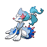

Primarina appears on 25 of 1799 Pokémon Champions VGC tournament teams in the backtwo archive (1% usage, Reg M-A and Reg M-B). The most common item is Mystic Water (48% of Primarina sets) and the most common ability is Liquid Voice. Its most frequent teammate is Sneasler (32% of its teams).
Open Primarina in the full app →| Team | Player | Event | Result | Reg | Date |
|---|---|---|---|---|---|
| Ruuto's PJCS 2026 Top 64 Team | Ruuto | PJCS 2026 | Top 64 | M-A | 6 Jun 2026 |
| Dorian Kang's VR June Challenge Top 16 Team | Dorian Kang | VR June Challenge | 9th | M-A | 7 Jun 2026 |
| MegaCinderite's Chesnaught Primarina Team | MegaCinderite | - | — | M-A | 17 May 2026 |
| Tauna_YT's Slowbro-Galar Venusaur Team | Tauna_YT | Video | — | M-A | 17 May 2026 |
| teru's Ranked Season M-1 27th Place Team | Teru Nakajima | Ranked Season M-1 | 27th | M-A | 30 May 2026 |
| Ruuto's PJCS Qualifiers 25th Place Team | Ruuto | PJCS Qualifiers | 25th | M-A | 10 May 2026 |
| Brian's Global Challenge I 2026 Team | Brian Youm | Global Challenge I 2026 | 1881st | M-A | 5 May 2026 |
| Pyreon's Global Challenge I 2026 Team | Nuno Rosario | Global Challenge I 2026 | — | M-A | 3 May 2026 |
| shiroan's Venusaur Dragapult Team | shiroan | - | — | M-A | 5 May 2026 |
| _coke_zer0's Grand Champions Festival Top 8 Team | _coke_zer0 | Grand Champions Festival | 8th | M-A | 26 Apr 2026 |
| ravencasts' Aerodactyl Tsareena Team | Raven | - | — | M-A | 24 Apr 2026 |
| Yanagi's Charizard-Y Kangaskhan Team | Yosuke Takayanagi | - | — | M-A | 19 Apr 2026 |
Showing 12 of 25 teams. See all 25 in the full app →
Already running Primarina and want the rest of the six? The team finder takes the Pokémon you have and ranks every tournament team by how many of your picks it matches. Or run the numbers in the damage calculator — Champions-accurate, with Mega Evolution, Stat Points, weather, terrain and spread reduction.